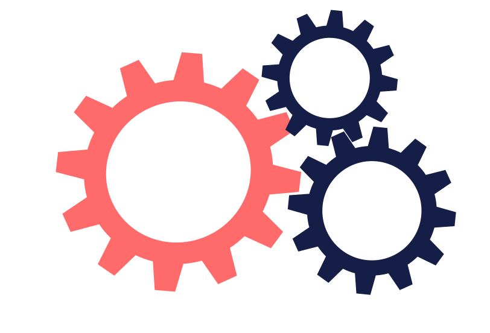

About Me
I’m a UX/UI designer based in Düsseldorf, Germany, with a background in education and a passion for creating accessible, user-centered digital experiences that balance functionality and visual harmony. After more than a decade of teaching and mentoring, I decided to pursue my long-standing interest in design and technology. This transition led me to UI Design Program, where I built a portfolio of end-to-end projects spanning wellness, lifestyle, e-commerce, productivity, and entertainment. Through this experience, I learned to combine research, design thinking, and iteration to craft interfaces that are not only beautiful but also meaningful and easy to use.
I have further expanded my skills through a specialization in Frontend Development for Designers, bridging the gap between design and development. My goal is to create designs that translate seamlessly into functional, responsive digital products. When I’m not designing, I enjoy exploring creative projects, learning new tools, and finding inspiration in everyday interactions — because great design starts with understanding people. Being fluent in English, German, Spanish, French and Russian is an additional bonus, as it allows me to thrive in a multi-national environment.
Skills
- User Research
- Wireframing
- Prototyping
- Usability Testing
- Interaction Design
- Responsive Design
Tools
- Figma
- FigJam
- Miro
- Canva
- Google Forms
- Notion